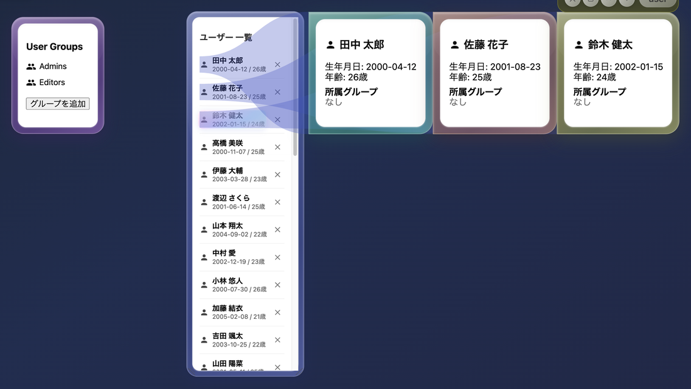
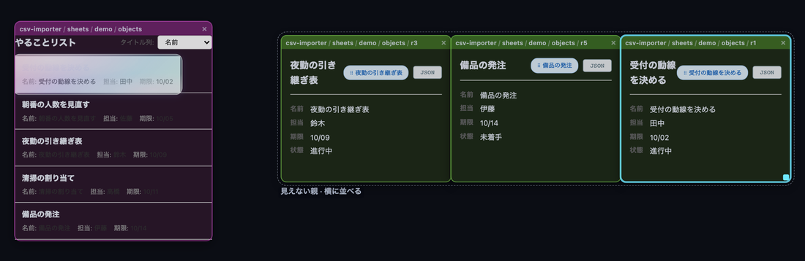
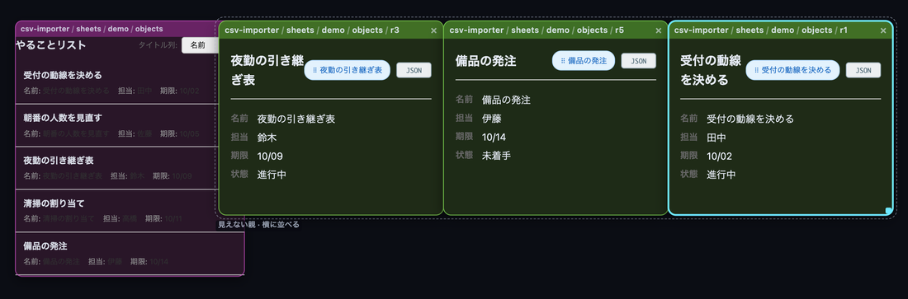

泡のならべかた ── 新しい bubble-ui
旧 bubbles-ui を置き換えるために、泡の並べ方を5つの規則に絞り直して作り直しているライブラリ群です。規則・いまの進み具合・残っている課題を、この1枚にまとめました。
bublys-libs/bubble-layout{,-ui,-feature}
受け入れ検査 20 本 ＋ 単体 101 本
本番アプリへの配線は まだ 0
これは何か
バブリ（bubly）の画面は「泡」でできています。泡を開く・並べる・奥へ送る・掴んで動かす、という振る舞いを持つのが bubbles-ui です。それをもっと汎用的で再帰的な模型に置き換え、同時に描画を速くするために作り直しているのが、この bubble-layout 系の3つのライブラリです。
この仕組みは プロトタイプ → 設計ノート → 実装 の順で育ってきました。「なぜこうなっているのか分からない」実装を見つけたら、バグと呼ぶ前に docs/bubble-space-prototype/ のノートを探してください。番号つきで「踏んだ落とし穴」が書いてあります。
読む順番
- この頁（全体像・15分）
- v4/RULES.md ── 規則の正典。247行。迷ったらここに戻る
- v5-dom/lab.html を開いて触る（ビルド不要。ツールバーで軸とレンズを変えられる）
- DECISIONS.md ── 規則の外で決めたことと、その経緯
いまの現在地（1文で）
規則は固まり、domain・ui・feature の3層とも動いて検査も通っているが、本番のアプリにはまだ1画面も載っていない。載せる前に決めてほしいことが 4つ残っている。
なぜ作り直すのか
もっと汎用的で再帰的なモデルにし、記述できるシチュエーションを増やすということ、そして描画を高速化すること。（masa さん・2026-09-21）
旧 bubbles-ui は「レイヤーの配列」で奥行きを、「測った矩形から次を決める」で位置を作っていました。これは カレンダー・世界線・coverflow のような並べ方を1つずつ作り込むことになり、しかも「測る → Redux → 再レンダ → また測る」のループを抱えていました。
新しい模型では、泡は「位置になりうる値」を何種類も持ち、親の View がその値をどう読んで、どう並べて、どう写すかを持ちます（→ どういう意味か）。並べ方は組み合わせで決まり、入れ子ごとに同じ規則が繰り返されます。
旧 bubbles-ui | 新しい規則 | |
|---|---|---|
| 重なりの上下 | process.layers: string[][]＋置いた順。フォーカスで最後尾へ、z-index:100 直書きでレイヤーを飛び越える | 描く順は dz → scale → 並び順。View の外に状態を持たない |
| 泡が持つ値 | position と size だけ。奥行きは「どの配列に居るか」でしか表せない | 泡が free / order / cell / hist を持ち、View が読む |
| 並べ方 | 測った矩形から次を決める（SmartRect.calcPositionForSibling が右→下→左→上に空きを探す） | 帯の式。値から純粋に計算する（測らない） |
| 倍率 | scale = 1 − layerIndex × 0.1。10 で 0、11 以上で負（クランプ無し） | 透視 m = 1/(1 + 0.26·dz)。dz<0 は消す |
| 入れ子 | universe 泡だけ真の DOM 入れ子。scale の積を測って戻している | scale は数値1つ。合成は1回だけ、DOM は平ら |
| 箱の伸び | 全泡に max-height: 90vh 直書き（//FIXME:突貫対応） | ④ 中身が収まるまで伸びる。切り抜きはしない |
「描く所だけ差し替え」は選べない。 上の食い違い（とくに上3つ）は描画層の差し替えでは埋まらず、中途半端に両方残すと二重に動きます。残るのは 作り直し か 共存 の二択 ── これは v5-dom/FINDINGS.md 5章の実測に基づく結論です。
原則 ── 規則は5つで全部
これ以上でも以下でもありません。新しい振る舞いが欲しくなったとき、まず「5つのどれで書けるか」を考えます。規則を増やすのは最後の手段です。
規則②が「掴んでいる／掴んでいない」を分けているのは、押してから離すまでに 3px 動いたかどうかだけです。動かさずに離すのは「触る」で、これは別の操作です。
View は軸（X・Y・Z）ごとに 次元・並べ方・レンズ を持つ。これが入れ子ごとに繰り返される。
ドラッグした量を、その軸が読んでいる値に書き戻せるなら書く。書き戻せないなら、代わりに視点が動く。掴んでいないとき（背景・ホイール・触る）は、いつも視点。
「A の左に B がくっついている」＝ 見えない親が中身を左右に並べている。箱も奥行きも View も自分のものは何ひとつ持たず、持っているのは並べ方ひとつだけ。
等間隔と詰めるの違いは、帯の幅の決め方だけ。
泡の位置は箱の中心なので、中身が増減して箱が伸び縮みしたら、見えている場所を保つように位置を書き直す。
「泡は値を持つ」とはどういうことか
泡は、順序もマスも自由座標も履歴もぜんぶ同時に持っています。どれか1つを選んで入れるのではありません。View が「この軸はどれを読むか」を選び、読まれなかった値はただ眠っています。
このうち自由座標（free: {x, y, z}）は、旧 bubbles-ui の position: {x, y} と見た目がそっくりです。ちがいは「持っているかどうか」ではなく、それが必ず位置になるかどうか：
- 旧の
positionは必ず位置。ほかに置き場所が無いので、並べ方を変えるには position を書き換えるしかない - 新の
freeは候補のひとつ。親の View が X に「自由X」を刺しているときだけ位置になり、「順序」を刺していれば1バイトも効かない（眠る）
| 泡 | order 順序 | cell マス | free 自由座標 | hist 履歴 | size |
|---|---|---|---|---|---|
| A | 0 | (0, 0) | (−300, −100) | 0 | 160×110 |
| B | 1 | (1, 0) | (120, −40) | 1 | 160×110 |
| C | 2 | (2, 0) | (−80, 180) | 2 | 160×110 |
| D | 3 | (0, 1) | (260, 120) | 3 | 160×110 |
| E | 4 | (1, 1) | (40, −220) | 4 | 160×110 |
この5つの泡に、View だけを当て替えると、こうなります ── 泡の値は1バイトも変わっていません。
histZ（Z＝履歴の古さ）を当てれば、倍率 0.49 / 0.56 / 0.66 / 0.79 / 1.00 の奥行きに並びます）泡は名簿の1行です ── 出席番号・座席・身長が全部書いてある。View は「どう並べるか」の指示 ──「出席番号順に」「座席表のとおりに」。並べ方を変えても、名簿は書き換わりません。
名簿に「座席」が書いてあっても、「出席番号順に並べ」と言われたら座席は効きません。でも消えてはいないので、「座席表で」と言えばまた効く ── これが「自由座標を持っているのに、位置そのものではない」という意味です。
旧 bubbles-ui は名簿に「立ち位置」を書き込む方式でした。だから並べ方を変えるには全員の立ち位置を書き直す必要があり、そのために実際に並ばせて measure する（測る→Redux→再レンダ→また測る）ループを抱えていました。
だから、並べ替えても元に戻れる
旧は並べ替えると position を上書きしてしまうので、戻す先がありません。新は order を書くだけなので、自由座標は無傷のまま残ります。実測：
① 自由に置く 画面 A(120,145) B(540,205) C(340,425) D(680,365) E(460,25)
free A(-300,-100) B(120,-40) C(-80,180) D(260,120) E(40,-220)
② X を「順序」に 画面 A(72,245) B(246,245) C(420,245) D(594,245) E(768,245)
free 触っていない
③ E を先頭へ並べ替え order A:1 B:2 C:3 D:4 E:0 ← 変わった
free ★ 1バイトも変わっていない
④ X を「自由X」に戻す 画面 A(120,145) B(540,205) C(340,425) D(680,365) E(460,25)
★ ① と完全に同じ（散らばりが戻ってきた）。並べ替えた order も残っている泡が持つもの、そのぜんぶ
{ id, title, hue,
size: { w, h }, // 自前の大きさ
parent: "bubble-id" | null, // null ＝ いちばん外の空間
free: { x, y, z }, // 「自由」次元が読む
order: 0, // 「順序」次元が読む
cell: { col, row }, // 「列」「行」次元が読む
hist: 0, branch: 0, // 「履歴」次元が読む
view: View | null, // 中に泡を入れているなら、その並べ方
implicit: false, // くっつけて生まれた見えない親か
}持たないもの：関係（含む・隣り合う）／アンカー／置いた順／レイヤー／url。
含む＝親になる。隣り合う＝見えない親の並び。手前＝Z 軸の値に書く。
★ 値段：order は泡に1つしかないので、同じ空間の X と Z が両方 order を読むと連動します（「順序の取り合い」）。「横に並べる」と「触ると手前へ」を両方 order でやろうとして踏みました ── いまは後者を焦点（視点）に移して解決しています。
① View の中身 ── 3軸 × 3つ ＝ 9マス
この9マスの組み合わせが、並べ方のすべてです。「カレンダーの格子」も「coverflow」も「世界線の履歴ストリップ」も、9マスの値が違うだけ。プリセットは free / row / column / grid / fisheyeX / coverflow / histZ / stackZ の8つですが、これは名前をつけた組み合わせにすぎません。
order は泡に1つしかないので、同じ空間の X と Z が両方読むと連動します ── これが後述の「取り合い」）。空間が View を持たなければ、並べ方は外から継ぎます。焦点（視点）は継ぎません。④ 「帯」とは ── 値1つにつき、1本のレーン
次元が返すのは数だけです。そして同じ数を持つ泡が複数ありうる（順序が 1 の泡が2つ、など）。だから並べるには、先に「その数の泡が入る場所」を決める必要があります。それが帯です。
並べ方3つの違いは、帯の幅の決め方だけ：
- そのまま（as-is）── 帯を作らない。値がそのまま px
- 等間隔（equal）── 帯の幅はいつも
step。中身の大きさを見ない - 詰める（pack）── 帯の幅はその値を持つ泡でいちばん大きいもの。帯と帯は隙間（
gap、既定 14px）で継ぐ
下は実測です。泡は4つ、B と C は同じ値（順序 1）なので同じ帯に入ります。幅はわざとばらばら（A 160・B 100・C 240・D 120）。
- 格子のマスは、X の帯と Y の帯の交差。格子という専用のコードはありません ── X が「列」、Y が「行」を読んで、それぞれが帯を作るだけ。落とし先を決める
cellFromBandsも軸ごとに1回ずつ呼ばれるだけです（drop.ts:228）。ここから3つ出てきます（実測）：- 列の幅・行の高さは、そのマスでいちばん大きい泡で決まる（詰めるなので）。表らしい振る舞いがタダで出る ── 実測で 列0 幅240／列2 幅120、行0 高さ60／行1 高さ100
- ★ 空の列は存在しない。列1 に泡がいなければ帯は作られず、列0 と列2 はふつうの隙間 14px で隣り合う（列1 のぶんは1px も空かない）。マスの番号は座標ではなくラベルです ── カレンダーで日付が飛ぶと、その列は詰まります。空けて見せたいなら、規則の外で手当てが要ります
- いちばん右の帯より外に落とすと列が1つ増える（列2 の右 → 列3）。左の外では増えません（0 より小さくならない）
- ★ これは「泡を格子に並べる」ための道具で、泡の中身の表組みには使いません。
細かい表は、ふつうに CSS grid で組みます（
<table>ではなく ──<tr>は table fixup でObjectViewに包めず、実害が出ています）。 セルを全部泡にすると重すぎる、というのが 2026-09-19 の決定です（DECISIONS.md「泡の中身と、子の泡は、別物にする」）。 泡にするのはその表から開くオブジェクトのほうです - 塊（規則④の「塊の中央を空間の中心に置く」）＝ 帯をぜんぶ合わせた範囲。だから泡が増えると、塊の中央がずれて触っていない泡も動く ── ⑤ が要る理由がこれ
- 等間隔に中身を見させると、帯の幅が中身で決まって「値×間隔」が消える ＝ それは詰めるそのもの。だから2つで足りる
② 操作 ── 何を掴んだか × どの軸
泡をドラッグしたとき何が起きるかは、「その軸が読んでいる値に、ドラッグした量を書き戻せるか」だけで決まります。書き戻せる値なら泡が動き、書き戻せない値なら代わりにカメラが動く。5通りしかありません。
| 軸が読んでいる次元 | 書き戻せるか | 泡に書かれるもの | 見た目 | 実測（react-drag） |
|---|---|---|---|---|
| 自由X · 自由Y · 自由Z | 書ける | free.x / .y / .z | 泡がついてくる | memo3.free |
| 順序 | 書ける | order（兄弟と入れ替わる） | 並べ替わる | row0.order / row1.order |
| 列 · 行 | 書ける | cell.col / .row | 別のマスへ移る | d3.cell / d12.cell |
| 履歴の世代 · 古さ · 枝 | 書けない | 何も書かない | 視点が動く（時間を行き来する） | fish.focus |
| なし | 読む値が無い | 何も書かない | 何も起きない | 何も変わらない |
「その泡が何世代目に生まれたか」は済んだ事実で、ドラッグして変えられるものではありません。だから履歴の軸をドラッグしても泡は動かず、代わりにカメラが時間の中を移動します ── 世界線ビューを横にドラッグすると歴史をたどれるのは、これです。
この5通りは dimension.ts の write フィールドそのもの（'coord' | 'reorder' | 'cell' | null、それと 'none'）。新しい次元を足すときに決めるのは「この値は書き戻せるか」だけで、操作の側は1行も書きません。
掴んだものによる違い
| 掴んだもの | 軸 | 起きること |
|---|---|---|
| 泡を横・縦にドラッグする | X / Y | 上の表のとおり（書き戻せるなら泡、書き戻せないなら視点）。横と縦で別々に決まる ── X は自由座標・Y は履歴、なら横にドラッグすると泡が動き、縦にドラッグすると時間を遡る |
| 背景をドラッグする | X / Y | 掴んでいないので、いつも視点 |
| ホイール | Z | 同上 |
| 泡を触る（3px も動かさずに離す） | — | その泡へ視点が寄る。値は1つも書かない |
| 右下の角をドラッグする | — | 大きさを変える（⑤で兄弟は動かない） |
触った泡は手前へ、は多分、微妙だと思う。どちらかというと、触った泡の方にカメラが寄っていく感じがいいと思う。（masa さん）
これで「横に並べる」と「触ると主役が変わる」が同時に成り立つようになりました（前者は X の次元、後者は焦点）。⑤との緊張も消えています ── 値を書かないので、触っていない泡は定義上動きません。
解く順番と、平らな DOM
速さの根っこはここです。「合成は1回だけ」と「DOM は平ら」の2つで、毎フレーム書くのが transform 1行になります。
resolveWorld(world, viewport) が木をたどって、平らな配置の一覧（placements）を返します。木は domain だけが持ち、DOM は平ら。 だから <Bubble><Bubble/></Bubble> と書けるようにはしません（木が React と domain の2箇所にできて剥がせなくなる）。泡の中身は renderBubble(id, draw) => ReactNode で外から渡します。「canvas の9〜12倍速い」は主スレッドだけの話です。実時間で本当に勝つのは魚眼の場面だけ（2.2倍）。DOM は仕事を減らしたのではなく、ラスタを別スレッドへ出しました。正しい売り文句は「主スレッドが空く＝入力にも他の処理にもつっかからない」。
いちばん大きな落とし穴は 画面の px を毎フレーム書くことです。枠の太さや字の大きさを border-width / font-size で書くと layout が戻ってきます（実測：場面Cで layout 1951ms）。画面で固定したい量は逆 scale を当てて戻す（--k）。
部品の地図 ── Nx のライブラリ3つ
「部品」＝ Nx のライブラリ（プロジェクト）です。bublys-libs/ の下に3つあり、CLAUDE.md の3層 DDD（domain / ui / feature）にそのまま1対1で乗っています。
| Nx プロジェクト名（＝ import 名） | 層 | 置き場所 |
|---|---|---|
| @bublys-org/bubble-layout | domain | bublys-libs/bubble-layout/ |
| @bublys-org/bubble-layout-ui | ui | bublys-libs/bubble-layout-ui/ |
| @bublys-org/bubble-layout-feature | feature | bublys-libs/bubble-layout-feature/ |
使う側は名前をそのまま書きます（import { BubbleSpace } from '@bublys-org/bubble-layout-feature'）。npx nx のコマンドでは短い名前でも通ります（npx nx build bubble-layout）。つなぎ方は npm workspaces で、tsconfig の paths ではありません ── node_modules/@bublys-org/bubble-layout が bublys-libs/bubble-layout へのシンボリックリンクになっています。
package.json の dependencies に書いてある本物の依存で、依存する側から、依存される側へ向いています。だから domain にはどこからも矢印が入るだけで、出ていきません ── React も Redux も DOM も知らない、が保たれます。★ これは「buildable library」です。 package.json の main / exports が ./dist/index.js を指しているので、ソースを直しただけでは使う側に届きません。npx nx build <名前>（中身は tsc -b tsconfig.lib.json）が要ります。
nx test は依存だけをビルドするので、feature を直して feature のデモを焼くと古いままの絵が出ます（実際に踏みました）。exports に "@bublys-org/source": "./src/index.ts" という条件も置いてあり、それを指定するビルドツールだけは src を直接読みます。
| ライブラリ | 行数 | 何を持つか | 受け入れ条件 |
|---|---|---|---|
| bubble-layout domain |
2,813 +テスト 1,045 |
規則そのもの。React も Redux も DOM も入っていない純関数。resolveWorld（解く）と reshape（付け替える）の2本が入口。動詞は dragBubble / dragFocus / wheelZ / resizeBubble / commitDrop / focusOn |
ラボ（lab.html）と差 0（41場面・のべ2300個、浮動小数の最後の桁まで） |
| bubble-layout-ui ui |
1,116 +テスト 195 |
描く（BubbleField・draw.ts）と触る（useBubbleInput・hit.ts）。描く下限（既定 5px）はここ ── domain には入れない |
ラボと px で差 0（12場面・6264個の数、DOM の矩形 0.00px） |
| bubble-layout-feature feature |
869 +テスト 225 |
url とオブジェクトにつなぐ。BubbleSpace（世界を持つ）・ObjectView・openAt（開く）・routing |
本物のバブリ（csv-importer）の画面を1文字も編集せずに載せて、本物のマウスで触る |
旧 bubbles-ui（11,165行）との対応はこうです。置き換えに要る口は、バブリ6つを数えて4つだけでした。
| 旧 bubbles-ui | 使われ方 | 新しい側 |
|---|---|---|
ObjectView | 223 箇所 | feature/ObjectView（openingPosition は受け取って無視する ＝ 編集せず載せ替えられる） |
BubbleRoute | 65 箇所 | feature/routing |
openBubble | 37 箇所 | feature/openAt |
BublyApp 系 | 36 箇所 | feature/BubbleSpace |
bubbles-slice ＋ bubbles-listener（測る→Redux→再レンダのループ） | — | 要らなくなる。 位置は値から純粋に出る |
BubblesLayeredView ＋ BubbleView | — | ui/BubbleField（ただし見た目はまだ移していない → 残課題） |
紛らわしい同名ライブラリ： bublys-libs/bubble-space（1,574行）はv1の模型で、別物です（関係・アンカー・マグネット ＝ 規則が消したモデル）。使っているのは apps/bublys-os/app/bubble-space-demo と bubble-space-hotel の2ページだけ。比べる相手として残してあり、置き換えが済んだら2ページごと消す予定です。
ここまでの道のり
各段には「何を確かめたら次へ行ってよいか」が決まっていて、その検査が _check/ に残っています。数字はすべて実測です。
Canvas の単体プロトタイプ。「論理座標とレンズの合成だけで決まる」が第1版の公理だった。
目（カメラ）の位置で奥行きを覗く。
v1 には配置の経路が2つあった（アンカーから決まる経路と、次元→レンズの経路）。経路を1つにすると決めた回。スナップも内包も coverflow も、すべて親の View。
規則が5つに固まる。ここが正典。
5通りの描き方を同じ台で測り、「平ら＋transform 1行」に決めた。旧 bubbles-ui との食い違い8つもここで洗い出した。
矩形 対 解いた答え 0.0000px ／ 落ちたフレーム 0
lab.html の純粋な部分だけを bubble-layout へ。同じ日に規則が2つ変わった（触ると視点が寄る／端での下限をやめる）。
ラボと差 0（41場面・2300個）／ テスト 63本
描く・触るを React で。ラボと同時に開いて、同じ操作を同じ順に当てて突き合わせる検査を作った。
絵 0.00px（6264個）／ 触り方 9件で書かれた値が一致
csv-importer の「一覧 → 詳細」を、画面ファイルを1文字も編集せずに新しいライブラリの上で動かした（esbuild の alias で差し替え）。
26件の検査。ObjectView・select が泡の中で生きる・ダブルクリックで開く
09-21 に2つ直した ── 続けて開くと同じ場所に重なる／見えない親が掴めない。
〜22
旧の実物と並べて測ったら、いまの開き方（X 魚眼）が関心の順を逆転させていた。旧の「層」を Z で書き直す案を、切り替えられる形で入れてある。
受け入れ検査 20本・単体 101本・lint 3つ、ぜんぶ通る
候補は hotel-shift-puzzle-bubly。その前に 決めてほしいこと4つ。
node docs/bubble-space-prototype/v5-dom/_check/all.mjs で全部走ります。headless Chromium で 本物のマウスで触り、数を突き合わせます。
smoke ／ vs-v4 ／ hit ／ drag ／ flat ／ perf ／ ui ／ rule1〜rule5 ／ snap ／ stack ／ drawmin ／ screen ／ react ／ react-drag ／ bubly ／ plane
新しい振る舞いを足したら、ここに1本足すのが作法です。単体テスト（vitest 101本）は式の見張りで、受け入れ条件はこちら側にあります。
動かし方
ツールバーで軸・並べ方・レンズを変えられる。プリセット8つ。規則を疑ったらまずこれ。
open docs/bubble-space-prototype/v5-dom/lab.html#plane を付けると旧の「層」の開き方で始まる。上のツールバーで切り替えられる。
open docs/bubble-space-prototype/v6-bubly/dist/index.html
open "docs/bubble-space-prototype/v6-bubly/dist/index.html#plane"★ デモは feature の dist を掴むので、nx test だけでは反映されません（依存しかビルドされない）。
npx nx build bubble-layout-feature
node docs/bubble-space-prototype/v6-bubly/build.mjsnode docs/bubble-space-prototype/v5-dom/_check/all.mjs # 受け入れ 20 本
npx nx run-many -t lint test -p bubble-layout bubble-layout-ui bubble-layout-featurenode bublys-libs/bubble-layout-ui/demo/build.mjs
open bublys-libs/bubble-layout-ui/demo/dist/index.html入口は /。/bubble-ui は Provider を持たない古い頁で落ちます（useCas must be used within a CasProvider）。見終わったら止めること ── dev サーバーはアプリのディレクトリ単位でロックを取るので、動かしたままだと次が起動できません。
npx nx dev bublys-os # → http://localhost:4000/一覧から詳細を3つ続けて開く、という同じ流れです。



芯 ── 旧の layers は「Z を詰める」だった
z を持つ泡の帯」。開くときに書くのは新しい泡の値1つだけで、他の泡は1バイトも変わりません。全員が1段下がって見えるのは、手前に帯が1つ増えて帯の番号がずれるからです。「空のレイヤーは詰まる」も、帯は値ごとに作るので何も書かずに出ます。| 旧 | 新・X 魚眼 | 新・面 | |
|---|---|---|---|
| 詳細を3つ | 1.00 ×3 | 0.755 ×3 | 1.000 ×3 |
| そのときの一覧 | 0.80 | 0.773（詳細より大きい） | 0.900 |
| 一覧と詳細の隙間 | 0px（測って寄せる） | 48px × 倍率 | 0.00px（測らずに置く） |
| 兄弟を1つ閉じる | 他は動かない | 残りが 150px 動いた | 0.00px |
| 3段目 | 1.0 / 0.9 / 0.8 | — | 1.000 / 0.900 / 0.818 |
| 面が空になったら | 後ろが1段ずつ上がる | — | 上がる（一覧 1.000） |
この「面」の開き方は <BubbleSpace depth="plane"> で切り替えられる形で入っています（既定はいまの魚眼のまま、domain は1文字も触っていません）。決めてほしいことは 次の節の先頭4つです。
残課題
3種類に分かれます。(a) 人が決めること／(b) 決まっているが作っていないこと／(c) 分かっている穴。(a) を飛ばして (b) を作ると、あとで作り直しになります。
(a) 決まっていない ── masa さん待ち
既定値を「決まったこと」として扱わないこと。 コードに入っている数（描く下限 5.0px、開く隙間、など）は、Claude が置いただけで masa さんが選んだものではないものが混ざっています。masa さんの言葉と、こちらの解釈を混ぜないのが、このプロジェクトでいちばん大事な作法です。
魚眼は masa さん自身の提案で、狙いは「ただ兄弟にすると同じ大きさになって旧の良さが損なわれる」を避けること。狙いは面でも満たせる（上の実測）。魚眼を捨てる話ではなく、魚眼は View の1つとして残る（coverflow・世界線）。決めるのは「開く」の既定だけ。
step にするかv7 / arrange.ts:86いま Z の詰めるは帯の幅が 1 に固定。values.indexOf(v) → values.indexOf(v) * A.step の1語で、開く・閉じるで焦点を1回も書かずに面が出る（実測 0回）。Z に詰めるを使う場面・検査は 0 件なので既存に響かない。ラボ（lab.html:627）にも同じ1語を入れて「差 0」を保つことになる。
面で開いた直後の詳細を (6,4)px ドラッグして離すと、一覧と見えない親に入り 34px の穴があく。旧の良さ「縁が接する＝2つで1つに見える」と、新しい仕組み「くっつく」の衝突。
候補：「くっつくのは同じ面の泡どうしだけ」（snapCandidateAt に1行。旧の「兄弟＝同じレイヤー」と同じ線引き）／ 接するのをやめて 48px あける ／ そのまま。
旧は「描く順だけ上がる。何も消えない」。いまの②は X・Y・Z ぜんぶ寄せるので、奥の泡のヘッダを触ると手前の泡が消える（実測 display:none）。DECISIONS.md では「消えたものは画面の縁に積む」と決めてあるが、そのスタックが feature にまだ無いので、いまはホイールでしか戻れない。
泡で測ると端の泡を広げたとき兄弟が一緒にずれる。帯で測るとずれは 0 だが箱が片寄る。両方できる形（rules.equalExtent）にしてあり、既定はラボと同じ 'bubble'。塊を空間のどこに置くか（いまは必ず中央）も未定。
いまは「中身が箱に収まるまで」。自由軸には止め方が無く、背景を20回ドラッグすると画面に見えている泡が 0/58 になる（実測）。候補Bは「泡が置いてある所まで」に付け替える ── 規則を1つも増やさず、旧 bubbles-ui は既にそちら。関連して「宇宙の縁で止める」が規則に無い（カーソルを窓の外へ出すと泡が −227.0px へ行って二度と掴めない。旧にはガードがある）。
「中身を持ちながら、子の泡も入れている泡」（表の行から泡が開いて、その泡が表の中に居座る、など）をまだ踏んでいない。ラボは本文を display:none にして避けてきた。④の帯に本文の席を1つ作るか、ホストになった泡は本文を捨てるか。
①〜⑤に「泡を作る」も「消す」も無い ＝ 「開く＝物の泡を作って置く」は、いま既に規則の外。いまは feature が openAt で持ち、url と id の対応も feature 側のメモ。
描く下限（既定 5.0px・ツールバーの range 0〜20px）と小さすぎた泡もスタックに積むか（既定：積まない）。どちらも切り替えを残してあります。
(b) 決まっているが、作っていない
| もの | 決まっていること | いま |
|---|---|---|
| 補間 | CSS transition に任せる。掴んでいる泡だけ切る | まだ書いていない。開くと泡がぱっと出る |
| 手前の泡スタック | 焦点より手前に出た泡は画面の縁に積む。押すとカメラが戻る。状態は持たない（カメラの位置の関数） | ラボにはある。feature に未配線（上の決めどころ4に直結） |
| カメラと世界線 | カメラはハッシュに入れず、ノードに紐づける（同一性には載せない）。ポップアップは打ち消しスナップで戻る | コードになっていない |
| Redux | 載せるなら WorldState 丸ごと1つ（CLAUDE.md「スライスは集約のリポジトリに徹する」） | world / onChange の口だけ開いている。開き直すと消える |
| 泡の見た目 | 枠に出すのはurl（パンくず）、題名ではない（中身が自分の題名を出すので二重になる） | ラボの暗い箱のまま。バブリの中身（明るい地が前提）の字が読めない |
| 出どころのリボン | 足せる。ui 79行。毎フレーム placements() から引き直す | 無い |
| ポップアップ／落とした点に開く | ダブルクリックとドロップはもともと同じ道 | OpenAs は 'beside' だけ |
| 小さい泡は骨に | ui の仕事 | 描く下限（描かない）だけ。中間の「骨」が無い |
(c) 分かっている穴
どれも実測で見つかっていて、直し方が分かっているものと、分かっていないものがあります。
| 穴 | 実測 | 状態 |
|---|---|---|
消えた泡で縮んだ並びを⑤が留めない（reshape が「出ていった泡」しか数えない。ラボには泡を消す口が無かった） | 150px → 0.00px | feature で手当て済み。本来の置き場は domain |
| 魚眼で幅の広い泡を掴むとずれる（①「像は端を通した間」から出る残り） | 最大 21.78px | 直し方が分かっていない |
| 焦点の泡も原寸に戻らない（レンズは焦点の上でも曲がる） | root で 0.962 | 同上（旧の最前面は 1.000） |
| ホイール1回で画面が1枚になる | 57個中 34個が vis 0 | 戻し方が画面のどこにも無い |
| View を組み替えると、触っていない泡が滑る | 平均 Δ321.9px | ⑤の言葉の上では破れではない |
| 角の当たり判定が 12px 決め打ち（小さい泡では幅の 41%） | 箱の外 +2px で効く | v3 は min(12, w/2, h/2) だった |
| 世界線の箱が履歴の長さで膨らむ | N=200 で 664→2341.9px | 原因は measure.ts:74 の need + pad |
| 泡が 1000 個を超える場面を誰も測っていない／画面外の泡を捨てる手が全部使えない（切り抜き禁止） | 58→521で反転 | 未検証 |
| キーボード操作が無い | tabindex 0 / keydown 0 | ラボに口が無くて試せていない |
| 複数人で同じ泡を見る／印刷・書き出し／検索 | 178件中 0件 | 誰も考えていない |
引き継ぐ人へ ── このプロジェクトの作法
- ノートが原典、コードはその移植。 意図が読めない実装を見つけたら、バグと呼ぶ前に
docs/を探す。「穴を伸びた後のサイズの比率にすると破綻する」のように、かつて発散やクラッシュを起こして今の形に落ち着いた決定が番号つきで残っている。 - 実測で話す。 この一連のノートに出てくる数字は全部、実際に触って測ったものです。「たぶん速い」「たぶん同じ」は書かない。検査を1本足すほうが早い。
- 規則を増やす前に、5つのどれで書けるかを考える。 v7 の「面」も、規則を足さずに Z 軸で書けました。増やす提案をするときは、増やすと分かる形で出す。
- domain に画面の話を入れない。 描く下限も、当たり判定も、補間も ui。
resolveWorldの答えは下限を動かしても1バイトも変わらない（検査が見張っています）。 - masa さんの言葉と、自分の解釈を分ける。 一度これを取り違えました ── 「覆われるのは構わない」を「潰れて読めないのは駄目」と読み替えて、要らない下限を入れてしまった。ノートに ★ 印が付いているのは、その取り違えの記録です。
- 実装前に議論する。 CLAUDE.md の設計哲学：「イベントハンドラごとに個別の処理を書くのではなく、言語化しやすいシンプルなルールに基づいて動作が自然と行われるようにする」。
書類の地図
docs/bubble-layout/
index.html ← いま読んでいるもの
docs/bubble-space-prototype/
v4/RULES.md ★ 規則の正典。迷ったらここ
DECISIONS.md ★ 規則の外で決めたことと、その経緯
v3/SPEC.md 公理を7案で確かめた回の共通語彙
v5-dom/FINDINGS.md DOM 5案の実測・旧との食い違い8つ・masa さんへの三択
v5-dom/lab.html ラボ（ビルド不要で触れる。規則の実物）
v5-dom/_check/all.mjs 受け入れ検査 20 本の入口
v6-bubly/FINDINGS.md 本物のバブリを載せた回。踏んだ3つ
v7-convergence/FINDINGS.md 旧との収束。決めどころ4つ（いまここ）
_carryover/CARRYOVER.md ★ 旧の良さ 54件の棚卸し。書ける/足せる/ぶつかる/落とす
bublys-libs/
bubble-layout/README.md domain。何をどこへ移したか・テストの網
bubble-layout-ui/README.md ui。なぜ平らな DOM か・描く下限
bubble-layout-feature/README.md feature。置き換えに要る口4つ
CLAUDE.md リポジトリ全体の規約（Nx・3層 DDD・スライスは集約のリポジトリ）- 「この並べ方は書けるのか」→ RULES.md の①④、それでも分からなければラボで作ってみる
- 「旧にあったあの機能はどうなった」→ CARRYOVER.md の一覧（54件を4つに仕分けてある）
- 「なぜこの数字なのか」→ DECISIONS.md、それか各 FINDINGS の「ぶつかった」節
- 「なぜこの書き方なのか（性能）」→ v5-dom/FINDINGS.md 2〜3章